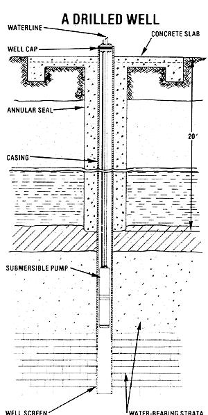

Prevent the woes-and ills-that surface-water contamination can bring to your homestead.
Fresh, unpolluted water is essential to our survival. If you live in a rural area and use a well (whether it be new or old) it's up to you to check your water source frequently and to pay careful attention to its maintenance. Surface contamination often undetectable to the senses of taste or smell-can occur quickly and without warning. Properly located and properly cared for, a water well will give long service... but if you don't know what you're doing, you can run into a pack of trouble!
Every well should have an annular (circular) seal, a concrete slab, and a well casing that extends above the slab. The annular seal should be at least 6 inches thick, completely enclosing the casing to a depth of at least 20 feet. The seal-made of cement, bentonite, or any other approved material-is an absolute must to prevent surface-water contamination. Many old wells have been lined with brick. If those clay blocks are glazed and in good condition, they can be faced with an inch or so of cement to form a satisfactory seal. Unglazed brick, however, must be removed and a new seal must be installed.
In many areas of the country, the natural water table is only a few feet below the soil surface. Where the water table is high, a well without adequate sealing is easily polluted by surface seepage. A new well with a new casing will be safe from such contamination for a while . . . but only until it develops the inevitable rust holes. In the long run, it's less expensive-and less frustrating-to go ahead and put in a good annular seal than to have to pull and replace the casing every time it develops a spot of rust.
Before being put into use (or reuse), every well should be tested for minerals, chemicals (particularly nitrate), and bacteria. After the initial analysis, the well should be tested once every year.
Calcium can't be removed satisfactorily, and the only way to avoid it is to switch to a different water source. Since the major hazard of this mineral is fouled pipes, though, you could try to get by with using the water only at the well head . . . but this would obviously entail considerable inconvenience .
Iron contamination can range from mere unpleasantness to a downright impossible-to-deal-with nuisance. A potassium permanganate filter will remove mineral iron down to 2 PPM (parts per million), which is a satisfactory solution for coping with suspended particles. However, the problem of so-called"iron bacteria" is harder to deal with. (These organisms aren't detrimental to human health. Still, brown drinking water isn't high on anyone's list of refreshments.) Your best initial recourse may be to put in a new pump that's been pretreated with full-strength swimming pool chlorine. And be sure to flush clean all the tools used in removing the old pump, because iron bacteria can adhere to almost anything, including your hands! If the problem persists in spite of the pump change and chlorine flushing, a chlorinator or chemical feeder may be the answer . . . that, or a new well.
Perhaps the most hazardous surface-water chemical to look out for is nitrate. An old well that tests high in it suggests human or livestock contamination, because nitrate is the natural product of decaying sewage, animal waste, and garbage. You may be able to solve the problem by drilling a new well and putting in a good annular seal, but if the nitrate still tests out at more than 45 mg/liter (or 45 PPM), you shouldn't use the water.
Why is there such a big fuss over nitrate? For one thing, it can cause methemoglobinemia, which impairs the oxygen-transporting mechanism in the human bloodstream. Young children are particularly susceptible to this condition. In addition, nitrate-by itself-is a suspected carcinogen: Studies have shown a higher incidence of stomach cancer fatalities in those people drinking high-nitrate water.
Obviously, if the nitrate is the result of a natural soil or water table condition, it can't be eliminated, so you'll have to obtain your water from an entirely different source. That's very unfortunate . . . but methemoglobinemia and stomach cancer are nothing to take chances with.
Living organisms of the coli-aerogenes group-the one most commonly found in water can be eliminated by treatment.
Wells should be checked frequently for evidence of these harmful bacteria.
To counteract such organic contamination, first clean the well. To do this, flush the pressure tank (if the system has one), then add chlorine directly to the well: three gallons of chlorine bleach with 5% sodium hypochlorite will cleanse the casing and lines of a 6- to 8-inch well.
Once that chemical's added, immediately turn on the pump. Fill the pressure tank-assuming you have one-then open all the spigots and run them until the water at every faucet smells of chlorine. If your setup has no pressure tank, simply pump water out of the well until the chemical is reaching the entire system. Allow the chlorine to remain in all your lines at least 12 hours . . . or longer, if possible. (While the chlorine is in the system, pipes can be checked for minute leaks by the "smell test".)
To put the system back into operation, open all the faucets and let water run until the chlorine smell is no longer noticeable. Wait two weeks, then have another sample tested. If there is still a problem, repeat the chlorine treatment.
If the procedure outlined above doesn't eliminate the bacteria, you'll need to check the well itself. Pull the pump, if it's on top, and inspect the condition of the casing by catching sunlight in a hand-held mirror and shining it down the cavity (or by using an automobile headlight wired to the battery of a nearby car). If you see holes in the lining, it should be replaced and the well should be sealed properly.
If, however, the casing looks all right, the well may have to be blown out with compressed air. This will help if the contamination stems from animal remains . . . such as those of mice, slugs, or snails that are in the water. Repeat the chlorine treatment if you replaced a defective casing or blew out a contaminated well. Finally, if everything else fails, drill a new well.
Be sure, if you do, to follow the safety measures outlined above ... and have your well water tested every year. The welfare of you and your family may be at stake!
EDITOR'S NOTE: Most county health departments will test your well water for the contaminants discussed above . . . for a small fee. Because this article dealt with surface-water problems, it did not cover toxic chemical pollution ... which generally comes from ground-water contamination.
Since we ran our article on that topic, "Toxic Chemicals and Drinking Water" (see page 26 of issue 80), we've learned of a company that does detailed testing of water for a very reasonable price. WaterTest Corporation, Dept. TMEN, Box 186, New London, New Hampshire 03257 will test water samples for 12 inorganic chemicals, total organic halide content (which includes pesticides and toxic chemicals), coliform bacteria, chlorides, manganese, iron, pH, and total hardness for a cost of only $35, plus postage.
At this time, we have already submitted samples to Water Test Corporation. We'll report in more detail about their service in the next issue of MOTHER.
|
 |
|
|